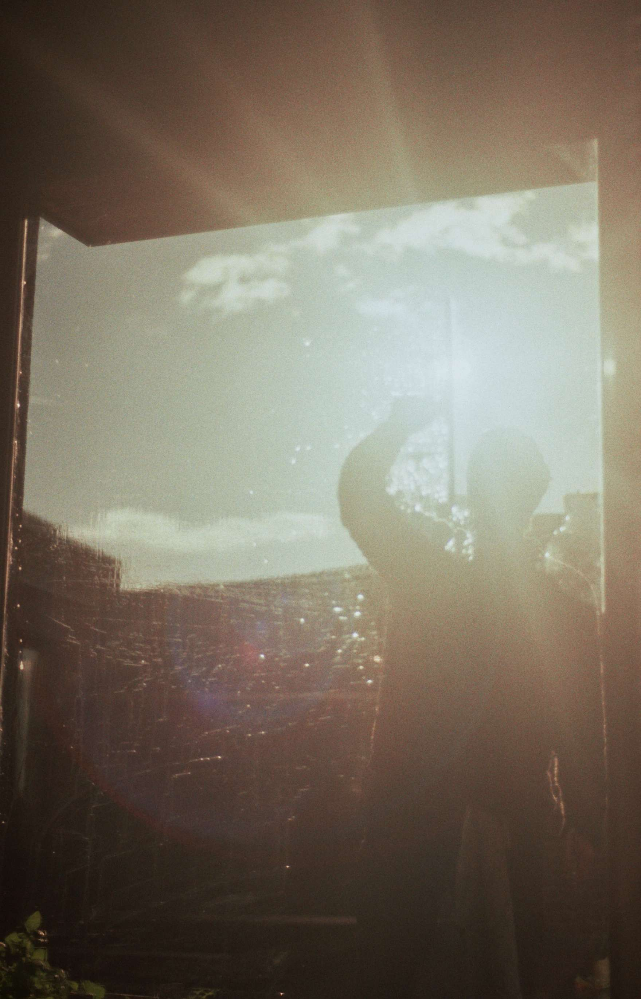

Arthur Zwaenepoel (Gent °1995). I studied molecular biology and bioinformatics at Ghent University (2012-2017), and later did my PhD on Bayesian statistical methods in evolutionary genomics in the group of prof. Yves Van de Peer (2017-2022). My current research focus is theoretical evolutionary genetics, starting a postdoc with Christelle Fraïsse in November 2022. I retain strong interests in Bayesian statistics, philosophy, programming, theoretical biology etc.
